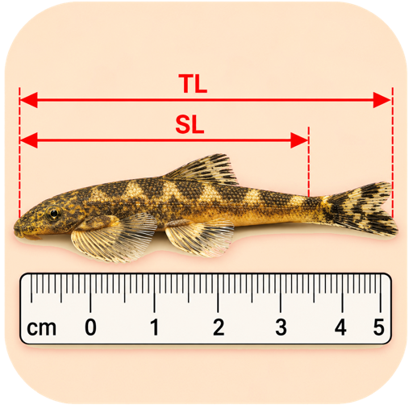
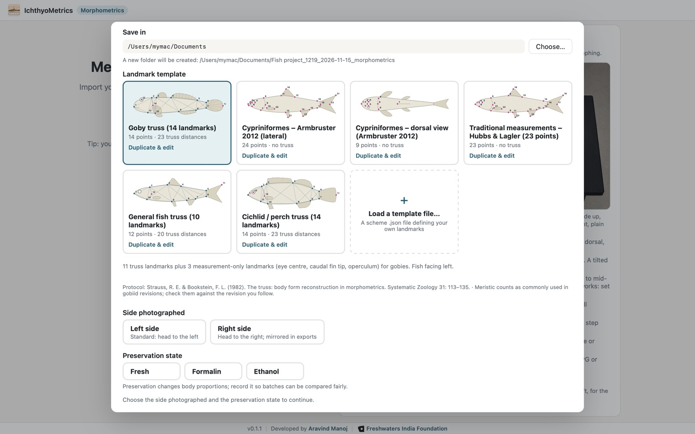
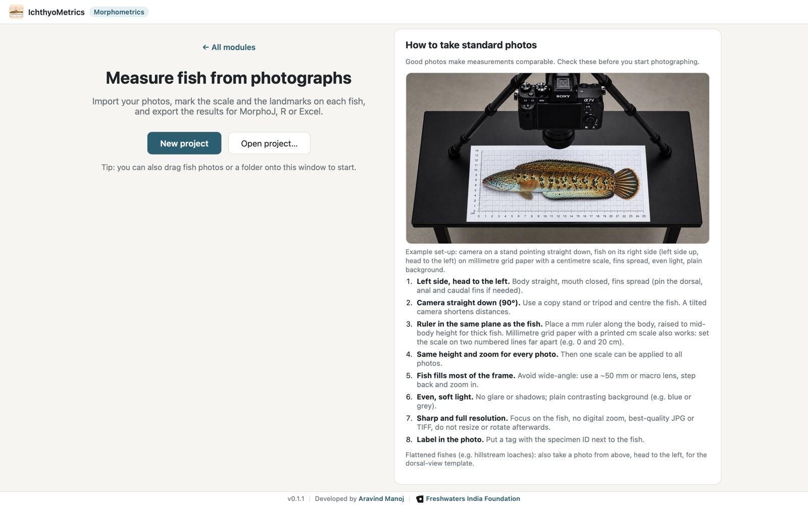

IchthyoMetrics: free fish morphometrics software
Measure fish from calibrated photographs. Set the scale from a ruler, place landmarks, get truss-network and traditional measurements, and export ready-to-analyse data for MorphoJ, PAST, R (geomorph) and Excel.
Version 0.1.1 · Free for academic and non-commercial use · Works offline

IchthyoMetrics is made for ichthyologists, fish taxonomists, fisheries biologists and students who measure specimens for species descriptions, taxonomic revisions and morphometric studies. It runs on Windows and macOS, and your photos and data stay on your own computer.
Video tutorial
Features
Scale from a ruler
Click two points on a ruler or grid paper in the photo, so every distance is in millimetres.Guided landmarking
Landmarks in a fixed order with a picture guide, zoom, pan and a magnifier for precise placement.Truss and traditional measurements
Standard length, head length, body depth, eye diameter, fin bases and full truss networks, calculated automatically.Ratios and size correction
Ratio tables (% SL, % head length) with mean, SD, min and max, and allometric size correction (Elliott et al. 1995).Left or right side
Right-side photos are mirrored in coordinate exports. Preservation state (fresh, formalin, ethanol) is recorded per project.Master data
Reference pictures and landmark positions per fish group (gobies, cyprinids …), shared by all projects.Built-in landmark templates
- General fish truss, 10 landmarks (Strauss & Bookstein 1982 style)
- Goby truss, 14 landmarks
- Cichlid / perch truss, 14 landmarks
- Cypriniformes lateral and dorsal views (Armbruster 2012)
- Traditional measurements after Hubbs & Lagler (1964)
Templates are editable JSON files: duplicate one or load your own.
Exports
| Format | For |
|---|---|
| TPS | tpsDig2, tpsRelw, MorphoJ |
| Tab-separated (mm) | PAST |
| TPS + classifiers + R script | R / geomorph |
| Excel workbook (.xlsx) | Excel, LibreOffice |
| CSV tables | Landmarks, measurements, ratios, size-corrected data |

Coming next: meristics
A counts module is in development: fin rays, lateral-line and transverse scales, predorsal scales, gill rakers, vertebrae and cephalic pores, with per-species summaries.
Download
| System | Install |
|---|---|
| Windows 10 / 11 | Download the -setup.exe (or .msi) and run it. If SmartScreen warns, choose More info → Run anyway. |
| macOS 11+ (Apple Silicon and Intel) | Download the .dmg, drag IchthyoMetrics to Applications. First start: right-click the app → Open. |
How to cite
Manoj, A. (2026). IchthyoMetrics: software for fish morphometrics and meristics (version 0.1.1). Freshwaters India Foundation. https://aravindmanoj143.github.io/ichthyometrics-releases/
Licence
Free for research, teaching, students and other non-commercial use. Commercial use requires written permission. Full terms: LICENSE.txt.